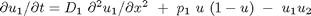
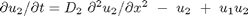
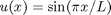
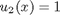
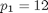
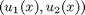
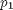
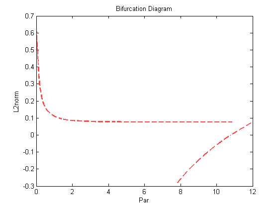

Stationary States (2D Problem)(Demo : pd2)
This demo uses Euler's method to locate a stationary solution of a nonlinear parabolic PDE, followed by continuation of this stationary state in a free problem parameter. The equations are
:  , :  ,
- on the space interval [0,L],
- where L=PAR(11)=1 is fixed throughout,
- as are the diffusion constants D_1=PAR(15)=Z and D_2=PAR(16)=1.
- The boundary conditions are u_1(0) = u_1(L) = 0 and u_2(0) = u_2(L) = 1, for all time.
Euler time integration is only first order accurate, so that the time step must be sufficiently small to ensure correct results. Indeed, this option has been added only as a convenience, and should generally be used only to locate stationary states.
Contents
Initialise workspace
Clear workspace
clear all % Create a continuation object. a{1}=auto;
Definition of function file
Display function file contents.
type(a{1}.s.FuncFileName);
function [f,o,dfdu,dfdp]= func(par,u,ijac) % % equations file for demo pd2 % f=[]; o=[]; dfdu=[]; dfdp=[]; % set the nonlinear term f(1)= par(1)*u(1)*( 1. - u(1) ) - u(1)*u(2); f(2)= -u(2) + u(1)*u(2);
Definition of initial conditions file
Display initial conditions file contents.
type(a{1}.s.StpntFileName);
function [par,u,o]= stpnt(t) % % starting point for demo int par=zeros(36,1); o=[]; % set the (constant) parameter par(1) = 12.; % % set the actual width of the space interval [0,par(11)] par(11) = 1.; % set the initial data in the (scaled) interval [0,1] u(1) = sin(pi*t); u(2) = 1.; % also set the space derivative of the initial data % note the scaling by 1/par(11) u(3) = pi*cos(pi*t)/par(11); u(4) = 0./par(11); % set the diffusion constants par(15) = 1.; par(16) = 1.;
Set intial conditions
In this case we load data from the starting point file. The stpnt.m file is called repeatedly for this option of Ips
Note that in the subroutine stpnt.m the initial data must be scaled to the unit interval, and that the scaled derivative must also be provided; see the equations-file func.f.
Initial data are  and  at time zero.
[a{1}.s.Par0,a{1}.s.U0,a{1}.s.Out0]=stpnt(0);
Load and display constants
In the first run the continuation parameter is the independent time variable, namely PAR(14), while  is fixed.
The constants DS, DSMIN, and DSMAX then control the step size in space-time, here consisting of PAR(14) and .
a{1}.c=cpd21(a{1}.c);
% Display the constants.
a{1}.c
ans =
autoconstants handle
Properties:
Ndim: 2
Noutx: 0
Ips: 16
Irs: 0
Ilp: 0
Icp: 14
Ntst: 10
Ncol: 4
Iad: 3
Isp: 0
Isw: 1
Iplt: 3
Nbc: 0
Nint: 0
Nmx: 35
Rl0: 0
Rl1: 500
A0: 0
A1: 100
Npr: 10
Mxbf: 10
Iid: 2
Itmx: 8
Itnw: 7
Nwtn: 3
Jac: 0
Epsl: 1.0000e-006
Epsu: 1.0000e-006
Epss: 1.0000e-004
Ds: 0.1000
Dsmin: 1.0000e-003
Dsmax: 5
Iads: 1
Thl: []
Thu: []
Uzr: []
Time integration towards stationary state
Find stationary state.
a{1}=runauto(a{1});
Warning: Truncating U0 to length defined by Ndim
--------------- DYNAMICAL SYSTEMS TOOLBOX ---------------------
USER NAME : ECOETZEE
DATE : 26/10/2010 10:10:58
<
BR PT TY LAB TIME INTEGRAL U(01) MAX U(01) MAX U(02)
1 1 EP 1 0.00000E+00 6.36620E-01 1.00000E+00 1.00000E+00
1 10 2 3.30173E-01 2.08360E-01 3.23508E-01 1.00000E+00
1 20 3 1.39181E+00 9.58280E-02 1.49742E-01 1.00000E+00
1 30 4 4.36574E+00 7.72029E-02 1.20754E-01 1.00000E+00
1 35 EP 5 1.08431E+01 7.64484E-02 1.19515E-01 1.00000E+00
Total Time 0.812E+00
>
Continuation of stationary states.
In the second run the continuation parameter is . Restart from autof8 object from previous run. A branch point is located during this run.
a{2}=a{1};
a{2}.c=cpd22(a{2}.c);
a{2}=runauto(a{2});
--------------- DYNAMICAL SYSTEMS TOOLBOX ---------------------
USER NAME : ECOETZEE
DATE : 26/10/2010 10:10:59
<
BR PT TY LAB PAR(01) INTEGRAL U(01) MAX U(01) MAX U(02)
1 8 BP 6 1.07712E+01 1.08866E-05 1.70973E-05 1.00000E+00
1 15 EP 7 7.82250E+00 -2.78185E-01 5.27238E-24 1.00000E+00
Total Time 0.453E+00
>
Plot the solution
Create plaut object and plot solution.
p=plautobj; set(p,'xLab','Par','yLab','L2norm'); ploteq(p,a);